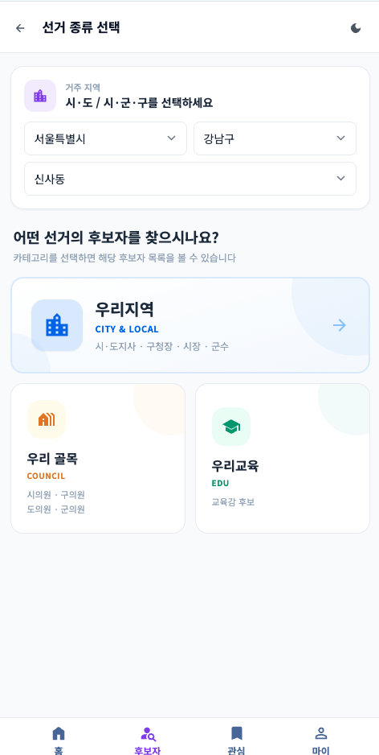
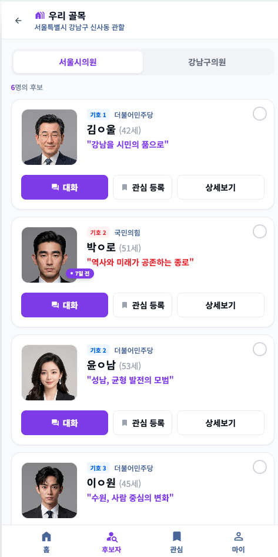
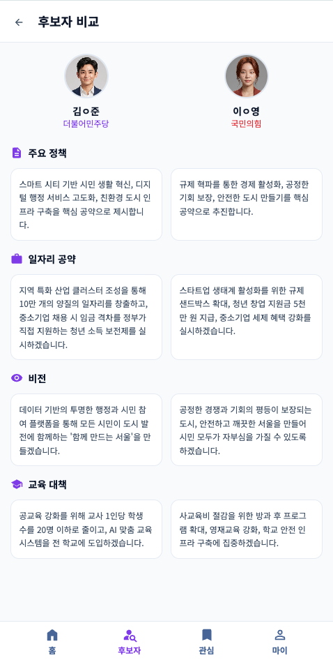
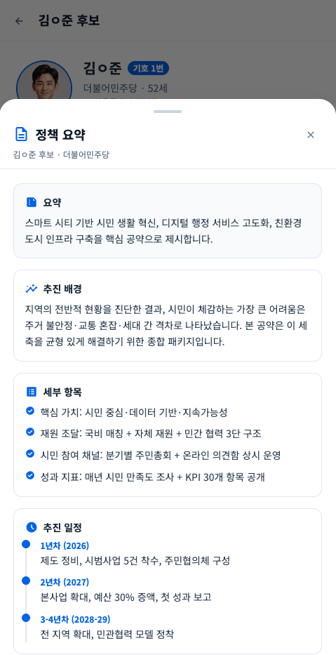
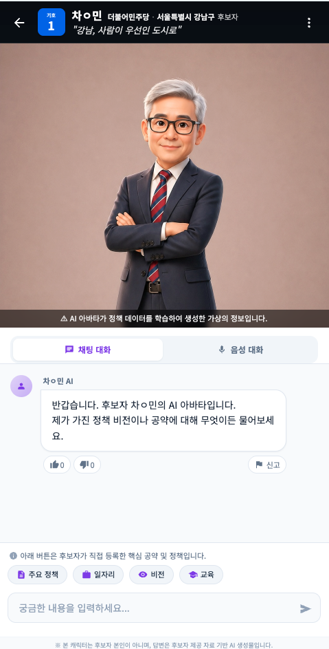
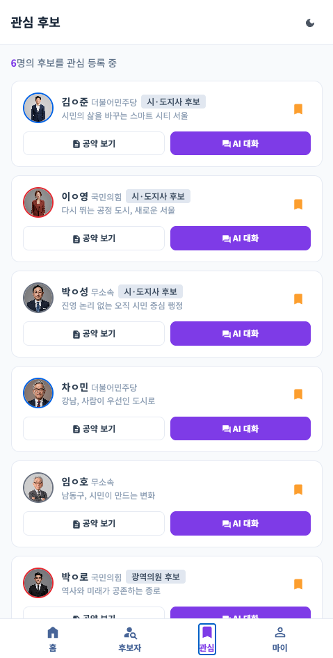
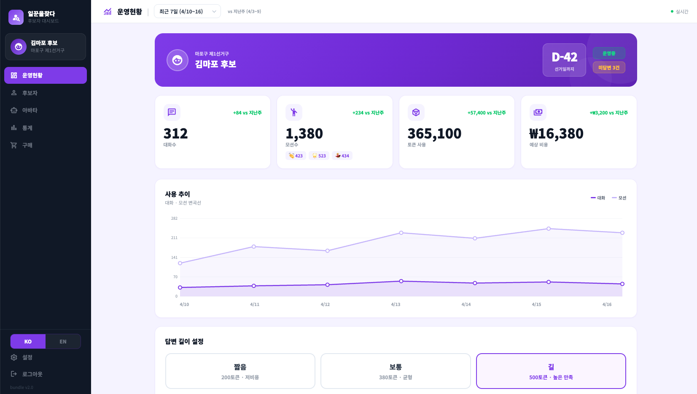
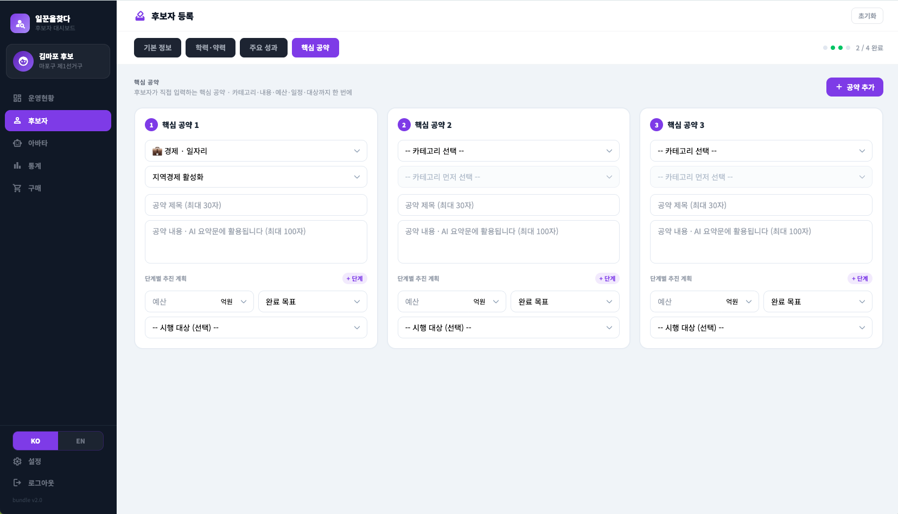
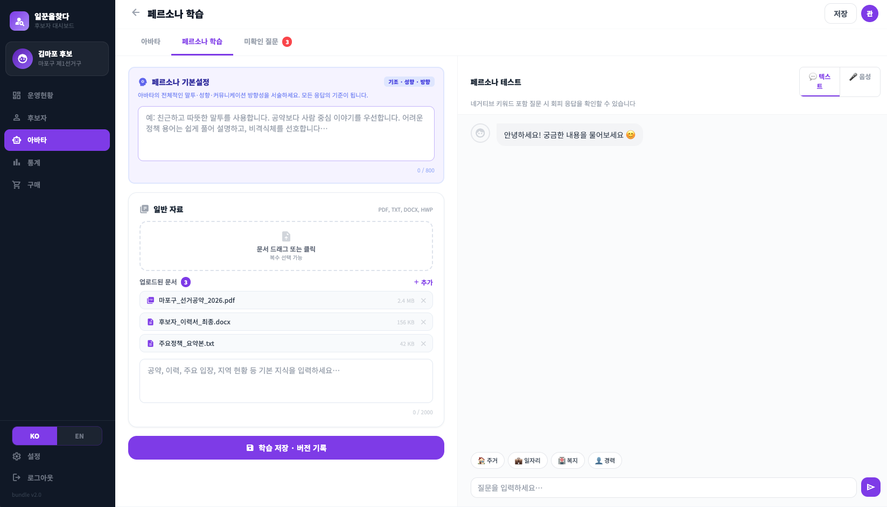
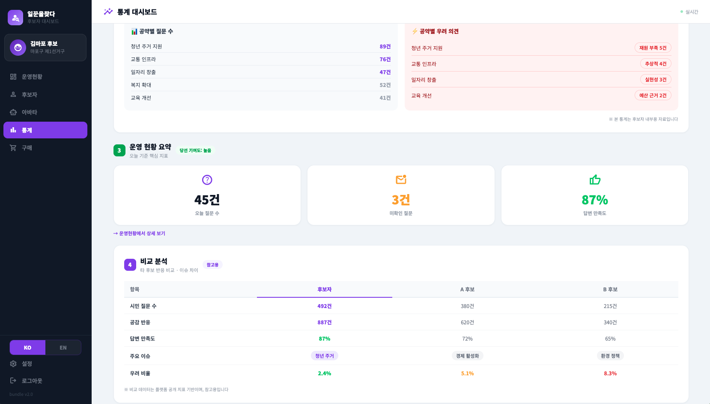

일꾼을묻다· PRODUCT BROCHURE
일꾼을묻다· PRODUCT BROCHURE보고, 비교하고, 묻고,
답을 받는 선거 연결 시스템
유권자가 후보자를 직접 확인하고, 비교하고, 질문할 수 있는
유권자 ↔ 후보자 연결 플랫폼입니다.
일꾼을묻다는 유권자가 후보자를 더 쉽게 이해하고, 비교하고, 질문할 수 있도록 만든 선거 플랫폼입니다.
시민은 자신의 지역 후보자를 한 번에 확인하고, 공약을 비교하며, 궁금한 내용을 바로 질문할 수 있습니다. 질문은 플랫폼을 통해 자동으로 전달되고, 후보자의 입장이 다시 시민에게 전달됩니다.
이 과정에서 유권자의 의견과 제안은 캠프에 직접 전달되어 새로운 선거 소통 구조를 만들어냅니다.
edit_note후보자 등록 상담하기
유권자는 묻고, 후보자는 답합니다.
www.illkkun.cloud · ilkkun.official@gmail.com
01 / 19
일꾼을묻다· 02 시대 변화
02 · 시대가 바뀌었습니다
시민들은 더 이상
기다리지 않습니다.
직접 확인하고, 비교하고, 묻습니다. 모바일과 SNS 기반 소통이 기본이 된 시대 — 이 구조를 준비한 후보만이 유권자와 연결됩니다.
기존 — 검색
공약집을 직접 찾아 읽어야 했습니다
search
○○구청장 공약집 PDF 다운로드
arrow_downward
지금 — 확인·비교·질문
모바일에서 바로 확인하고, SNS처럼 소통합니다
forum
"청년 일자리 공약 후보별로 비교해줘"
이 후보의 공약은 현실적인가요?
옆 동네 후보랑 비교하면 어떻게 다른가요?
우리 동네 주차 문제는 어떻게 해결하나요?
제 의견을 후보자에게 직접 전달할 수 있나요?
유권자는 똑똑합니다. 이제 따지고, 확인하고, 요구합니다.
물음에 답하는 후보자가 선택받습니다.
시대가 원하는 방식이 바뀌었습니다.
02 / 19
일꾼을묻다· 03 시민 사용 흐름
03 · 시민 사용 흐름
보고 → 비교하고 → 묻고 →
전달하고 → 답을 받는다
유권자는 후보자를 한 번에 확인하고, 비교하며, 질문하고, 의견을 전달합니다. 후보자는 이를 받아 다시 답합니다 — 단방향 정보가 아닌 양방향 연결 구조입니다.
1
person_search
보기
내 지역 후보자 한 번에 확인
arrow_forward
2
balance
비교
공약·정책 후보별 비교
arrow_forward
arrow_forward
4
campaign
전달
의견·제안 캠프로 전달
arrow_forward
5
verified
답을 받음
후보자 입장 다시 전달
cyclone
유권자가 움직이는 양방향 구조
유권자 ↔ 후보자를 잇는 양방향 연결 시스템입니다. 시민이 능동적으로 확인·비교·질문하고, 의견을 캠프에 전달하면 — 후보자가 받아 답합니다.
정보를 찾는 선거가 아니라,
확인하고 판단하는 선거로 바뀝니다.
03 / 19
일꾼을묻다· 04 4 핵심 기능
04 · 4 핵심 기능
시민이 후보자를 만나는
4가지 방법
일꾼을묻다는 정보·비교·질문·의견 전달 — 4가지 핵심 기능이 한 곳에서 결합된 종합 플랫폼입니다.
1
person_search
후보자 정보 플랫폼
우리 지역의 모든 등록 후보자를 한 화면에서 확인합니다.
- 프로필 (사진·이력·기호·소속)
- 공약 자료 풀텍스트 열람
- 정책 방향 / 보도자료
2
balance
비교 기능
같은 직급·지역 후보자의 공약을 나란히 비교합니다.
- 동일 분야 공약 차이 한눈에
- 정책 방향 비교
- 판단을 쉽게 만드는 구조
3
forum
질문 기반 소통
궁금한 공약을 직접 묻고 즉시 답을 받습니다.
- 공약 관련 자유 질문
- 정책 설명 요청
- 유권자가 먼저 묻는 구조
4
campaign
의견 전달 시스템
유권자의 의견·제안이 캠프에 직접 전달됩니다.
- 지역 민원 / 정책 제안
- 후보자가 받아 검토·반영
- 유권자 목소리 연결 채널
hub
유권자 ↔ 후보자 연결 시스템
정보 + 비교 + 질문 + 의견 전달. 네 가지 기능이 결합되어 유권자가 움직이는 구조를 만듭니다.
04 / 19
일꾼을묻다· 05 AI 전달 구조
swap_horiz핵심 가치 ① · AI 전달 구조
유권자 질문을
캠프로 전달하는 구조입니다
플랫폼이 유권자와 캠프 사이의 질문·답변을 자동으로 오가게 하는 전달 시스템입니다. 시민이 묻고, 캠프가 확인하고, 후보자의 답변이 다시 시민에게 전달됩니다.
arrow_forward
전달
arrow_back
support_agent
플랫폼
자동 전달 시스템
arrow_forward
전달
arrow_back
policy
등록 자료 기반 응답
후보자가 등록한 답변·공약·자료에 한정해 응답합니다.
edit_note
후보자 직접 수정
관리자 페이지에서 답변 수정 즉시 학습·반영됩니다.
groups
캠프 공동 관리
정책 담당자·캠프 인력이 함께 답변을 관리합니다.
theater_comedy
응답 캐릭터 (옵션)
중립형 (기본)
친근형
설명형
캠프 성격에 맞춰 선택
"시민은 질문하고, 캠프는 확인하며,
후보자의 답변은 다시 전달됩니다."
05 / 19
일꾼을묻다· 06 유권자 반응 데이터
analytics핵심 가치 ② · 유권자 반응 데이터
유권자의 마음을
데이터로 읽습니다
플랫폼이 시민의 대화를 데이터로 보여드립니다.
후보자는 시민의 마음을 읽고, 맞춤 답변으로 응답합니다.
공감이 쌓이고 — 시민이 원하는 후보자가 됩니다.
forum12.4%
3,247건
오늘의 질문 수
favorite8.2%
82%
공감 반응 비율
groups5.1%
1,824명
참여 유권자 수
trending_up신규
5개
상승 이슈 키워드
시간대별 질문 흐름 (최근 7일)
하루 평균 2,400건 · 피크 시간 19~22시
이번 주
지난 주
trending_up주요 이슈 키워드
청년 주거
일자리
신호등
임대료
교통
학교
공원
CCTV
주차
육아
상권
버스
※ 글자 크기 = 반응 빈도 · 시간대별 자동 갱신 · 샘플 데이터
06 / 19
일꾼을묻다· 07 익명 표본 비교
data_thresholding핵심 가치 ② · 익명 표본 비교
익명 표본 평균 대비 위치를
객관적으로 확인합니다
비교 지표는 같은 직급·지역 그룹의 익명화된 표본 평균으로 제공됩니다. 강점·보강 분야를 한눈에 확인합니다.
data_thresholding
나의 캠프는 지금 어디에 있나요?
같은 직급·지역 후보들의 익명 평균과 비교해 강점·보강 분야를 한눈에 확인합니다. 누구의 데이터인지는 표시되지 않습니다.
MY 캠프
유권자 반응도
82%
최근 7일 공감 반응 평균
익명 표본 평균
같은 직급 평균
68%
동일 직급 그룹 평균
차이
평균 대비 위치
+14%p
상위 25% 구간
| 지표 |
MY 캠프 |
익명 평균 |
차이 |
| 일평균 질문 수 | 462건 | 318건 | +45.3% |
| 공감 반응 비율 | 82% | 68% | +14%p |
| 참여 유권자 수 | 1,824명 | 1,210명 | +50.7% |
| 주요 이슈 노출 | 12개 | 8개 | +4개 |
이 데이터로 무엇을 하나요?
전략 수정관심 분야·시간대 파악 → 캠페인 우선순위 조정
공약 개선반응 낮은 공약 보강 + 반응 높은 공약 우선 강조
메시지 조정상승 이슈 키워드를 SNS·연설·홍보물에 즉시 반영
🔒 익명 표본 평균은 같은 직급·지역 그룹에서 추출되며, 어느 후보의 데이터인지 식별할 수 없도록 처리됩니다.
07 / 19
일꾼을묻다· 08 24시간 디지털 접점
schedule핵심 가치 ③ · 24시간 디지털 접점
시간과 장소 상관없이
유권자와 연결됩니다
유권자는 SNS·모바일에서 언제든 후보자를 확인하고 질문합니다. 한 번 자료를 등록해두면 24시간 자동으로 시민과 연결됩니다. 후보자는 더 중요한 현장과 판단에 집중할 수 있습니다.
stacked_bar_chart핵심 효과
- all_inclusive24시간 응답 — 새벽·휴일에도 자료 기반 자동 응답
- replay반복 질문 자동 처리 — 같은 질문이 100번 들어와도 즉시 응답
- groups다수 유권자 동시 응답 — 여러 시민이 동시에 물어도 모두 응대
- priority_high핵심 민원 선별 — 미답변 / 의견 전달은 후보자 검토 큐로 분류
- trending_down캠프 운영 효율화 — 반복 응대 인력 부담 감소
접점 확장 효과
사전
자료 등록 (1회)
공약·정책·프로필 등록
한 번만 등록
운영
유권자 자동 응답
선거기간 동안 무한 매칭
24시간 자동
집중
후보자는 핵심 현장에 집중
반복 응대 부담 없이 현장 활동·정책 보강
중요한 일에 집중
반복 질문은 자동으로, 후보자는 더 중요한 현장과 판단에 집중할 수 있습니다.
08 / 19
일꾼을묻다· 09 질문 구조
09 · 질문 구조
유권자가 쉽게 묻도록
질문을 설계했습니다
자유 입력 외에도, 공식 공약 카테고리에 맞춘 버튼형 질문 구조를 제공합니다. 유권자는 복잡한 공약집을 읽지 않아도 관심 분야를 골라 바로 질문할 수 있습니다.
work
경제·일자리
청년·중장년 일자리, 창업, 소상공인, 골목상권
favorite
복지·보건
노인·아동 돌봄, 의료, 정신건강, 저소득층
school
교육·보육
영유아 보육, 학교환경, 사교육, 진로교육
home_work
주거·교통
공공주택, 도시재생, 대중교통, 주차
eco
환경·안전
미세먼지, 탄소중립, 재난, 치안
stadium
문화·체육
문화·체육시설, 관광, 도서관, 축제
domain
행정·정치
시정 혁신, 시민참여, 디지털 행정, 청렴
agriculture
농림·균형발전
농업·어업, 균형발전, 청년 정주
09 / 19
일꾼을묻다· 10 요금 구조
10 · 요금 구조
가입비 + 기본 응답량 포함
선거기간 14일 기준 / 부가세 별도 · 후보자 페이지 세팅 + 자료 등록 + 기본 응답량 포함
광역단체장
시·도지사
299만원
forum기본 응답량 5,000건
- 후보자 페이지 세팅
- 자료 등록 / 자동 매칭
- 유권자 반응 대시보드
- 지역별 분석 / 익명 표본 비교
기초단체장
시장·구청장·군수
129만원
forum기본 응답량 2,000건
- 후보자 페이지 세팅
- 자료 등록 / 자동 매칭
- 유권자 반응 대시보드
광역의원
시·도 의원
39만원
forum기본 응답량 1,000건
- 후보자 페이지 세팅
- 자료 등록 / 자동 매칭
- 유권자 반응 대시보드
기초의원
시·군·구 의원
19만원
forum기본 응답량 500건
- 후보자 페이지 세팅
- 자료 등록 / 자동 매칭
- 유권자 반응 대시보드
처음에는 가볍게 시작하고, 질문이 늘어나면 필요한 만큼 확장합니다.
가입비에 후보자 페이지 세팅·자료 등록·기본 응답량이 포함되며, 소진 후 대화카드 추가 구매로 이어집니다.
10 / 19
일꾼을묻다· 11 직급별 산출 근거
11 · 직급별 산출 근거
왜 이 응답량이 필요할까요?
직급별 기본 응답량은 유권자 규모와 캠페인 활동 범위를 바탕으로 산정되었습니다.
event선거기간 14일 기준
forum질문 1건당 평균 응답 2회
groups유권자 규모 · 예상 참여율 기준
※ 실제 사용량은 후보자 활동과 지역 상황에 따라 달라질 수 있습니다.
광역단체장 (시·도지사)
유권자 규모가 크고 정책 분야가 넓어 가장 높은 응답량 필요
예상 질문 수5,000 ~ 20,000건
예상 응답량10,000 ~ 40,000건
1일 평균 응답700 ~ 2,800건
기초단체장 (시장·구청장·군수)
지역 이슈 대응 + 빠른 반응 확인이 핵심
예상 질문 수2,000 ~ 10,000건
예상 응답량4,000 ~ 20,000건
1일 평균 응답300 ~ 1,400건
광역의원
시·도 단위 정책 질문에 효율적 대응
예상 질문 수800 ~ 5,000건
예상 응답량1,500 ~ 10,000건
1일 평균 응답100 ~ 700건
기초의원
생활밀착형 질문 위주, 필요한 만큼 확장 가능
예상 질문 수300 ~ 2,000건
예상 응답량600 ~ 4,000건
1일 평균 응답40 ~ 280건
※ 위 수치는 일반적인 활동 범위에서의 예상값이며, 실제 사용량은 캠페인 운영에 따라 달라질 수 있습니다.
11 / 19
일꾼을묻다· 12 대화카드
12 · 대화카드
질문이 늘어날수록
필요한 만큼 확장합니다
남은 응답량은 대시보드에서 확인할 수 있으며, 부족할 경우 즉시 대화카드를 추가할 수 있습니다.
notifications_active응답량 알림 단계
70%
응답량 70% 사용 — 대시보드에 추가 안내 표시, 다음 카드 추천
90%
응답량 90% 사용 — 이메일·Chat 알림, 질문 대응 유지를 위한 추가 안내
100%
응답량 소진 — 1클릭 카드 추가 구매 안내, 신규 질문은 접수되며 응답량 확보 후 재개
질문이 늘어나는 것은 유권자 관심이 늘어나는 신호입니다.
12 / 19
일꾼을묻다· 13 운영사 안내
13 · 운영사 안내
신뢰할 수 있는 운영사가
함께합니다
글로벌 K-콘텐츠 라이브 운영과 디지털 플랫폼 개발을 전문으로 하는 (주)플레이4가 일꾼을묻다를 운영합니다. KCON·BTS×부산엑스포 등 대규모 동시접속 운영 경험과 보안·개인정보 보호 기준을 기본 원칙으로 삼습니다.
(주)플레이4
K-콘텐츠 라이브·메타버스·XR 플랫폼 개발을 전문으로 하는 IT 기업입니다. 일꾼을묻다는 (주)플레이4가 직접 기획·개발·운영합니다.
대표이사 임진우
사업자번호 267-86-00679
본사 세종특별자치시 나성북로21 A-76
사이트 play4.co.kr
workspace_premium주요 글로벌 K-콘텐츠 라이브 운영 이력
-
1st
2022.10
BTS × BUSAN 2030
2030 부산세계박람회 유치 BTS 콘서트 실시간 글로벌 생중계
-
2nd
2023.08
KCON 2023 LA
IVE · ITZY · (여자)아이들 · RIIZE · Stray Kids 외 다수
-
3rd
2023.10
KCON 2023 SAUDI
SUPER JUNIOR · 선미 · 효린 · STAYC · NewJeans 외 다수
-
4th
2024.03
ECO FRIEND 2024
기후위기 K-POP 콘서트 — 최예나 · 템페스트 · 루나 · 니엘
-
5th
2024.03
KCON 2024 HK
에스파 · ATEEZ · TWS · YENA · ZEROBASEONE 외 다수
-
6th
2024.05
KCON 2024 JAPAN
보이넥스트도어 · 레드벨벳 · 투어스 · 아일릿 · 태연 외 다수
lock
데이터 보안
- 전 구간 SSL 암호화 통신
- 유권자 개인정보 비수집 원칙
- 선거 종료 후 데이터 안전 폐기
- 업로드 자료 본인 요청 시 즉시 삭제
gavel
법령 준수
- 공직선거법 준수 운영
- 개인정보보호법 준수
- AI 안내 정보 상시 표시
- 가상 아바타 사용 시 별도 표기
support_agent
운영 약속
- 운영팀 / 기술팀 실시간 대응
- 신고·기술 이슈 즉시 처리
- 대시보드 안정성 모니터링
- 이메일 응대 체계 유지
format_quote
"선거가 끝나도 데이터를 함부로 다루지 않겠습니다."
— 일꾼을묻다 운영팀 약속
13 / 19
일꾼을묻다· 14 앱 사용 흐름
14 · 앱 사용 흐름
시민이 만나는
실제 화면 6단계
설명이 아닌 실제 작동 화면으로 보여드립니다. 시작·탐색·비교·정보·질문·저장까지 — 한 흐름에서 이어집니다.
STEP 1 · 시작

[assets/app-region.png]
지역·선거 종류 선택
거주 지역 입력 → 우리지역 / 우리골목 / 우리교육 선택
STEP 2 · 탐색

[assets/app-list.png]
한눈에 보는 후보자
해당 단위 후보자 표시 · 정당별 필터 · 관심 등록
STEP 3 · 비교

[assets/app-compare.png]
나란히 정책 비교
2~3명 선택 → 정책·공약·비전·교육 컬럼별 비교
STEP 4 · 정보

[assets/app-pledge.png]
정리된 공약 확인
약력 + 핵심공약 4 · 후보자 대시보드에서 직접 추가 가능
STEP 5 · 질문

[assets/app-chat.png]
궁금한 건 바로 질문
키워드 버튼 또는 자유 입력 → 후보자 자료 기반 응답
STEP 6 · 저장

[assets/app-saved.png]
내 관심 보관
관심후보 · 공감공약 저장 (본인만 확인, 다른 시민 비공개)
14 / 19
일꾼을묻다· 15 후보자 대시보드
15 · 후보자 대시보드
캠프가 매일 보는
운영 도구 4가지
시민이 보는 화면(P14)에 더해, 후보자가 직접 운영하는 대시보드입니다. 한 번 가입하면 받는 실제 도구 — 운영 현황·공약 입력·자료 학습·통계 분석.
TOOL 1 · 운영현황

[assets/dash-overview.png]
한눈에 보는 운영 상태
선거일까지 D-day · 대화수·모션수·비용·미답변 실시간 + 사용 추이 차트 + 답변 길이 설정
TOOL 2 · 후보자 등록

[assets/dash-register.png]
공약 직접 입력·관리
기본 정보 / 학력·약력 / 주요 성과 / 핵심 공약 4 — 카테고리·내용·예산·일정·시행 대상까지
TOOL 3 · 페르소나 학습

[assets/dash-persona.png]
자료 업로드 → 답변 학습
PDF·DOCX·HWP·TXT 업로드 + 페르소나 테스트로 네거티브 키워드 회피 응답 검증
TOOL 4 · 통계 대시보드

[assets/dash-stats.png]
데이터로 보는 시민 반응
공약별 질문·우려 의견 + 운영 요약 (45건/3건/87%) + 익명 표본 비교 분석
15 / 19
일꾼을묻다· LET'S START
NOW IS THE TIME
유권자가 묻기 시작했습니다.
준비된 후보자가 됩니다.
일꾼을묻다는 시민이 후보자를 보고·비교하고·묻고, 의견을 전달하는 양방향 연결 시스템입니다. 이 구조를 준비한 후보만이 새 시대 유권자와 연결됩니다.
유권자가 보고, 비교하고, 묻고,
답을 받는 구조입니다.
16 / 19
일꾼을묻다· FAQ 1/3
17 · 자주 묻는 질문
자주 묻는 질문 (1/3)
서비스 구조 · 운영 · 데이터 — 자세한 답변은 항목을 클릭해 펼쳐보세요.
1서비스 구조
이 서비스는 무엇인가요?
유권자가 후보자의 공약과 정보를 확인하고, 질문을 남기면 캠프로 전달되며, 후보자의 답변이 다시 유권자에게 전달되는 선거 연결 플랫폼입니다.
플랫폼이 후보자를 대신해서 답하나요?
아닙니다. 후보자가 등록한 자료와 답변을 기반으로 응답하며, 확인되지 않은 질문은 캠프로 전달됩니다.
일반 챗봇과 무엇이 다른가요?
유권자 질문을 수집하고 캠프로 전달하며, 후보자 답변을 기반으로 응답하는 연결 구조입니다.
2운영 · 답변 관리
답변은 꼭 모두 작성해야 하나요?
아닙니다. 등록된 공약 중심으로 먼저 운영 가능하며, 미답변 질문은 캠프로 전달됩니다.
캠프 담당자가 대신 답변 작성해도 되나요?
가능합니다. 관리자 권한으로 캠프 인원이 함께 관리할 수 있습니다.
답변 수정은 가능한가요?
관리자 페이지에서 언제든 수정 가능하며, 수정 후 바로 반영됩니다.
AI가 이상한 답변을 하면 어떻게 하나요?
등록된 자료 기반으로만 응답하도록 설계되어 있습니다. 이상 답변은 관리자 페이지에서 즉시 수정 가능하며, 수정 후 바로 반영됩니다.
3데이터 · 활용
어떤 데이터를 확인할 수 있나요?
유권자 질문 수, 주요 이슈, 공약별 관심도 등 유권자 반응 데이터를 확인할 수 있습니다.
민심 분석 기능인가요?
민심 예측이 아니라, 유권자 질문과 반응 데이터를 정리하여 제공하는 구조입니다.
데이터 다운로드가 가능한가요?
데이터는 플랫폼 내에서 확인하실 수 있으며, 다운로드는 별도 제공하지 않습니다.
17 / 19
일꾼을묻다· FAQ 2/3
18 · 자주 묻는 질문
자주 묻는 질문 (2/3)
선거법 · 리스크 · 비용 · 계약 — 자세한 답변은 항목을 클릭해 펼쳐보세요.
4선거법 · 리스크
선거법 문제는 없나요?
AI 안내 정보가 응답마다 자동 표시되며, 사칭이 아닌 대리인 설정으로 운영되어 리스크를 최소화합니다.
상대 후보 관련 질문은 어떻게 되나요?
상대 후보에 대한 발언은 하지 않습니다.
부적절한 질문은 어떻게 처리되나요?
자동 분류 및 검토 절차를 통해 관리됩니다.
5비용 · 계약
가입비 외 추가 비용이 있나요?
기본 기능은 가입비에 포함되어 있으며, 추가 응답 사용 시 대화카드 방식으로 확장됩니다.
환불이 가능한가요?
후보자 페이지 구축 완료 전에는 안심 환불이 적용되며, 구축 후에는 환불이 제한됩니다.
중도 해지가 가능한가요?
해지는 가능하나 환불은 제공되지 않습니다.
비용 처리 가능한가요?
전자세금계산서 자동 발행 가능합니다.
할인 혜택이 있나요?
사전 등록 시 할인 적용됩니다.
18 / 19
일꾼을묻다· FAQ 3/3
19 · 자주 묻는 질문
자주 묻는 질문 (3/3)
운영 편의 · 사용자 이용 · 기술 — 자세한 답변은 항목을 클릭해 펼쳐보세요.
6운영 편의성
운영이 복잡하지 않나요?
미답변 질문과 전달 리스트를 중심으로 관리하면 되며, 복잡한 설정 없이 운영 가능합니다.
공약 등록은 어떻게 하나요?
사전 130개 질문(공약·신뢰·소통 등 카테고리)에 답변을 등록하고, 정책자료(한글·워드·PDF)를 업로드하면 됩니다.
모바일에서 관리 가능한가요?
관리자 기능은 데스크탑 환경에서 제공됩니다.
7사용자 이용
어르신도 사용 가능한가요?
음성 입력·음성 응답 기능을 제공합니다.
미성년자도 이용 가능한가요?
미성년자는 가입이 제한됩니다.
8기술 · 기타
SNS 연동이 가능한가요?
확장 연동은 별도 문의 시 지원됩니다.
서버를 별도로 구축해야 하나요?
별도 구축 없이 서비스 형태로 제공됩니다.
19 / 19